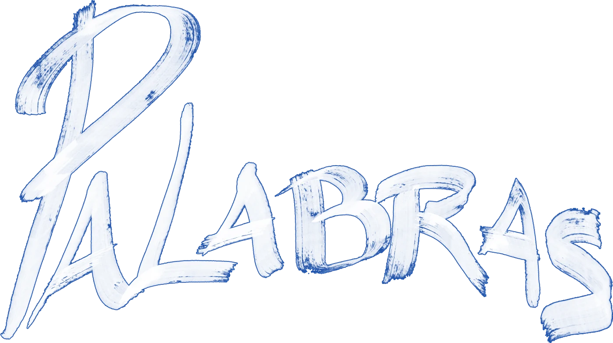
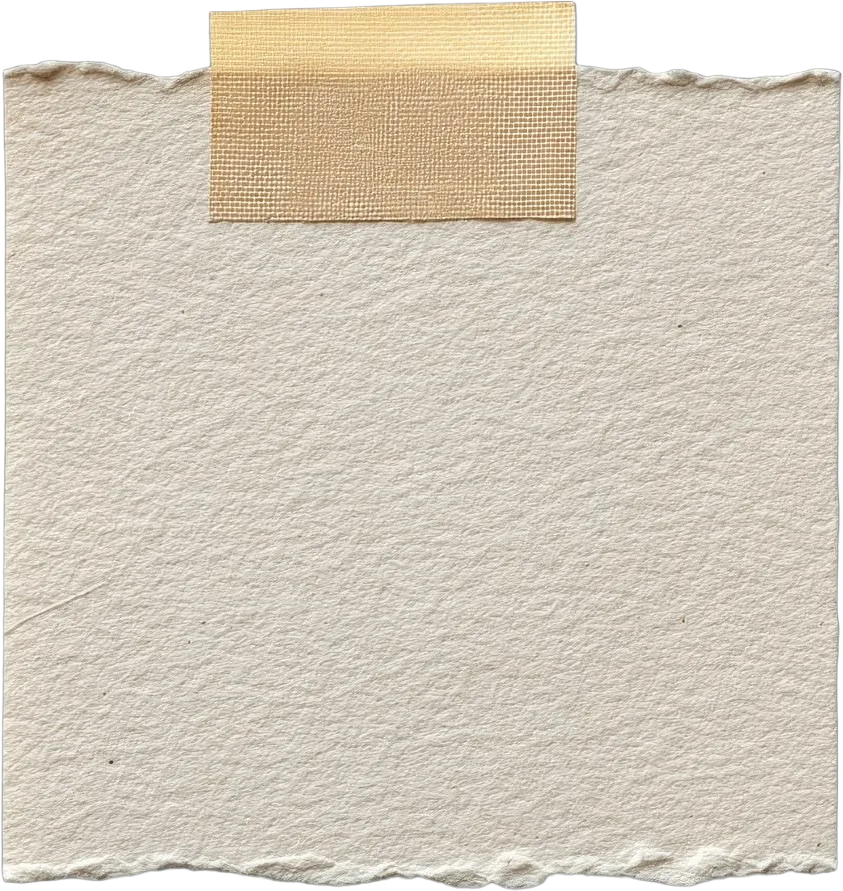
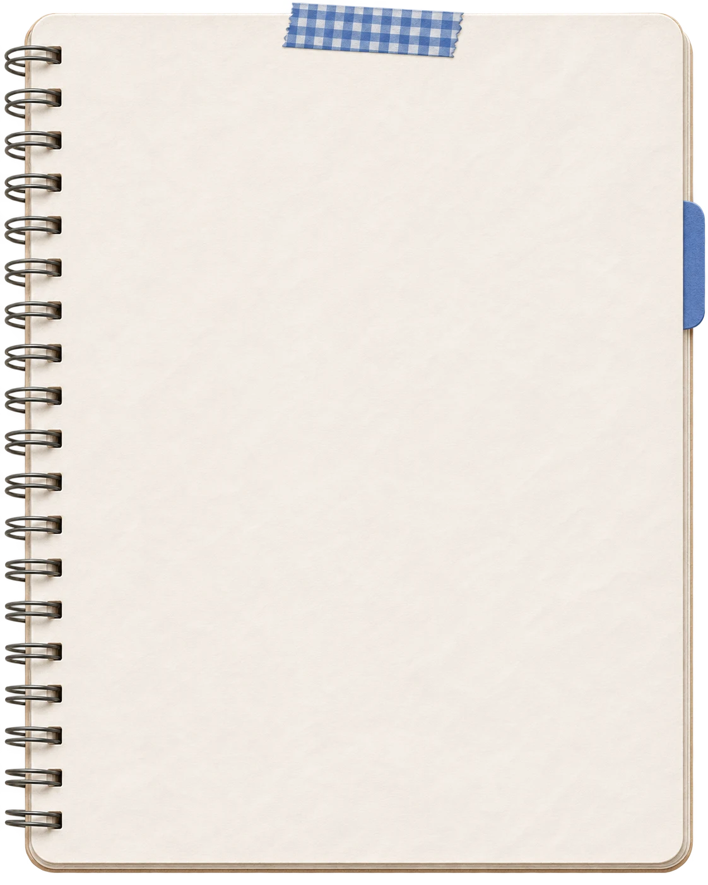

Mi primer disco



¿Te gustaría escribir?

Hola, soy Juana.
Escribí estas canciones porque había cosas que necesitaba poner en palabras. Ahora que las canciones están acá, me dieron ganas de que también nos podamos escribir.
Si alguna canción te hizo acordar de algo, te dejó pensando o te despertó una palabra, podés escribímelo acá. A veces una sola palabra alcanza.

Gracias por dejarme tus palabras.
Descubrir el mundo es hacer preguntas.
Las mismas preguntas son las que nos unen, nos hacen parte de algo. Nos llevan por un mismo camino.
Un camino que descubre que la vida es un gran conjunto de misterios.
El rol del artista es develar los misterios encontrando la forma de la pregunta como una canción, un cuadro, una foto, un poema,... como una película de la vida.